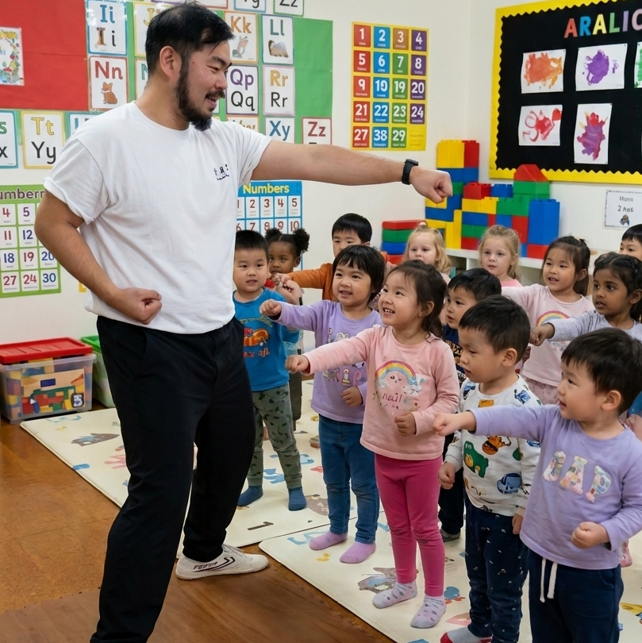

A fun, beginner-friendly Kung Fu class that helps preschoolers build balance, focus, confidence, and coordination.
A mobile, play-based martial arts incursion for daycare and early learning centres across Sydney's North Shore.
Book a Trial or Enquire for Your Centre
👉🏼 See what your little one will learn
* Image is AI-generated for illustration purposes. No real children's photos are used — we respect the privacy of every child and family.
Our Preschool Kung Fu & Movement program is designed around how 3–5 year olds actually learn — through play, movement, and repetition.
Simple stances and movement patterns build gross motor skills in an age-appropriate, playful way.
Games and call-and-response routines teach children to listen, follow instructions, and stay present.
Every child succeeds at their own pace. Trying, practising, and improving builds genuine self-belief.
Children learn respectful boundaries — their own personal space and others' — through structured partner activities.
Authentic Choy Lee Fut Kung Fu introduces children to Chinese martial arts heritage in a fun, accessible way.
Improved listening, impulse control, and body awareness all support the skills children need entering kindergarten.
Looking for martial arts for your 3 to 5 year old in Sydney? Our Preschool Kung Fu & Movement class gives your child a safe, encouraging introduction to martial arts — no experience needed, no uniform required.
We offer a fully mobile childcare incursion for daycare and early learning centres across Sydney's North Shore — including Marsfield, Waitara, Ryde, Hornsby, and surrounding areas.
We understand that inviting someone into your centre to work with young children is a matter of trust. Here's what we hold:
🛡️
Fully insured for incursion activities in childcare and early learning settings.
✅
WWCC verified — required and current for working with children in NSW.
🏢
Registered Australian business — invoicing and compliance straightforward for your centre.
🩺
Current Senior First Aid certificate, including CPR — prepared for any situation.
Sifu Angus has over 20 years of authentic Choy Lee Fut Kung Fu experience and has delivered programs in daycare and early learning centres across Sydney's North Shore. He is a 6th DAN certified instructor trained in Hong Kong under Grand Master Chu Shiu Ki.
Working with preschoolers requires patience, warmth, and clear communication — Sifu Angus adapts every session to the group, keeping children engaged, safe, and smiling throughout.
Absolutely. The program is designed for 3–5 year olds — all activities are non-contact and play-based. There is no sparring, no falling, and no rough contact. The focus is on movement, balance, and fun. Sifu Angus holds a current Senior First Aid certificate and WWCC.
The Preschool Kung Fu & Movement program is designed for children aged 3 to 5. Activities and language are pitched specifically at this developmental stage — not watered-down adult classes.
For incursion sessions at daycare or early learning centres, parents do not need to attend — the session runs with your centre's educators present as usual. For private trial sessions, a parent or guardian is welcome to stay and watch.
Comfortable clothing they can move in — their regular daycare clothes or activewear are perfectly fine. Bare feet or non-slip socks work best. No special uniform is needed for a trial or incursion visit.
Whether you're a parent looking for kids kung fu near Marsfield, Waitara, or the North Shore — or a centre director looking for a qualified, insured childcare incursion — we'd love to hear from you.
📧 Email: angus@sydneykungfu.au
📱 Text / WhatsApp: +61 491 703 514
Looking for martial arts for 3 to 5 year olds on Sydney's North Shore? We deliver daycare martial arts incursions and preschool Kung Fu sessions across Marsfield, Waitara, Ryde, Hornsby, Epping, Eastwood, and surrounding suburbs.
Enquire Today